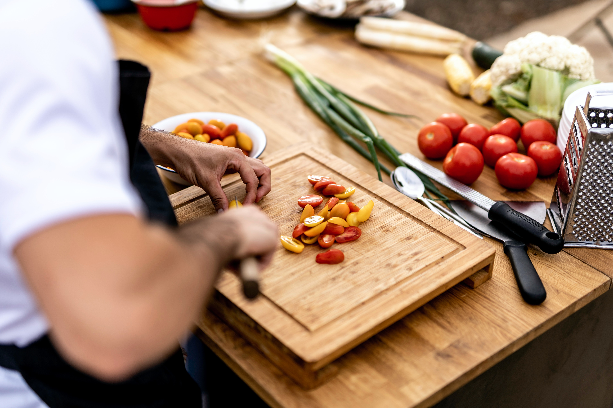

"I absolutely love this web app! It's so easy to use and helps me create delicious, healthy meals with the
proxyIngredients I already have on hand. It's perfect for busy weeknights when I don't have time to run to the
grocery store, and the recipes are always a hit with my family. I highly recommend it to anyone looking for
inspiration in the kitchen!"
Written By: Naomi C.

"Finally, an app that turns my fridge full of ingredients into a creative and delicious meal plan.
It's like having a personal chef who knows exactly what's in my kitchen!"
Written By: Andre P.